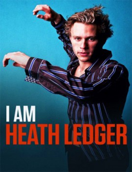

I Am Heath Ledger (2017)


Don't be afraid to fall.

País:Canadá, 90 minutos.
Idiomas:Inglés
GénerosDocumental
Director/es:Adrian Buitenhuis, Derik Murray
Guionistas:Hart Snider
Códec de vídeo:Unknown
Número: 2975
TomatoMeter:

--

--
Clasificación IMDb:


7.3/10 (212 votos)
Certificación:
Argumento:
Documental sobre el famoso actor australiano Heath Ledger.
Reparto
Heath Ledger (Como Self (archive footage)), Kate Ledger (Como Self), Kim Ledger (Como Self), Olivia Ledger (Como Self), Ben Mendelsohn (Como Self)
Medio: Archivo de video,
Localización: D:\PELICULAS\ACTORES\Heath Ledger\I Am Heath Ledger [2017] [905,07 Mb]\I Am Heath Ledger [2017].mp4
Prestado: No
Rel. aspecto: Unknown